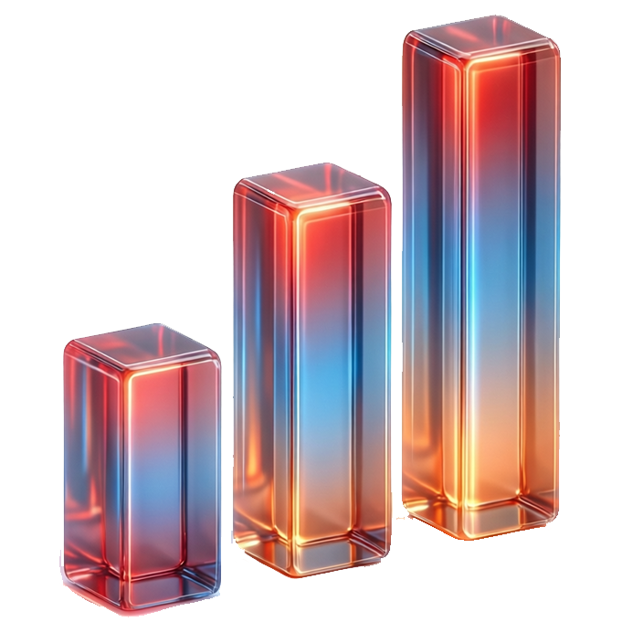

缓存基金列表
读取本地 API 缓存中的基金，并支持快速查询、筛选与排序
统计
返回计算器

×
代码 ↑
代码 ↓
名称 ↑
名称 ↓
年化费率 ↓
年化费率 ↑
买入费率 ↓
买入费率 ↑
正在加载缓存基金列表...
原始数据
代码
名称
基金类型
买入费率
年化费率
卖出费率分段
跟踪标的
业绩基准
基金公司
交易状态
更新时间
上一页
下一页
尾页
每页 50 条
每页 100 条
每页 200 条
每页 500 条
每页 1000 条
allfund 原始数据
×